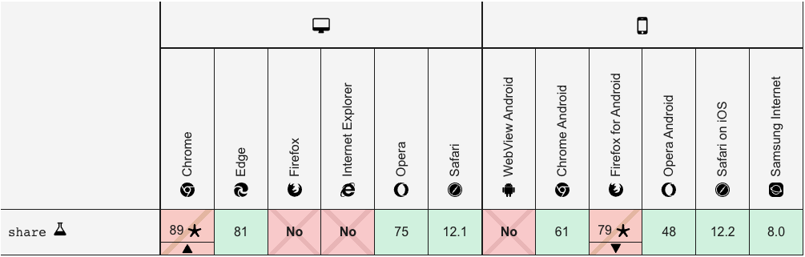

那些被忽略但很好用的 Web API / Share
Posted by Max on
與你分享的快樂，勝過獨自擁有
現代人看到有趣的網頁、新聞、消息等等時，最常做的事情就是分享到社群帳號中，而現在社群軟體數不勝數，Facebook、LINE、Instagram、twitter…等等。
起初，只有在 Android 和 iOS 的 APP 中你可以呼叫 OS 系統的原生分享介面，一般網頁則還是得一個個處理各家社群軟體的分享機制，所以你往往會在網頁中看到一排社群軟體的 LOGO 用來分享到不同地方。不過現在瀏覽器也提供了 Share API 來呼叫原生的分享介面了。
Share
雖然網頁終於有 Share API 來讓我們呼叫系統原生的分享介面，不過它的支援度還不是非常完善，其中對「電腦瀏覽器」不僅支援度低，就算有支援，也並沒有提供社群網站的分享，提供的分享途徑非常不實用。
而對於電腦的低支援度，我認為可能有兩點原因：
系統權限：
由於行動裝置中的 APP 都是依照手機 OS（Android、iOS）的規範編寫，所以手機 OS 能有相應的權限來開啟「社群軟體」的分享功能。反之電腦 OS (Microsoft、macOS) 沒有任何權限去啟動「社群網頁」的分享功能。操作習慣：
電腦使用者一般的的分享手段還是以網址分享為主，這樣的手段在電腦操作上是快速且方便的，而行動裝置對於同樣的操作是麻煩的，所以才需要原生分享的幫助。
隨然我們平常多以電腦的視角在開發網頁，不過為了加強行動裝置的使用體驗，Share API 還是有使用的需求性。
# Navigator.share
只要執行這個 method 就能啟用分享功能，不過需要注意幾個限制才能順利使用：
- 最重要的當然是瀏覽器要支援
- 它必須經由使用者的操作／手勢觸發
- 網站必須要有 https 的協定
另外，呼叫 navigator.share 時還需要傳入一個參數，用來設定分享內容或檔案：
- ShareData： 該參數需為一個物件，當中的所有屬性都是「可選的」，但必須至少有一項，可接受的屬性有以下：
- title: 一組字串，分享訊息的標題
- text: 一組字串，分享訊息的描述
- url: 一組字串，分享訊息要帶上的連結
- files: 一組 File 物件 的陣列，會成為分享內容的附件
你需要注意： 不是每個瀏覽器都能辨識所有的屬性，若不能辨識時就會忽略。
你需要注意： 就算瀏覽器能辨認，不同的分享途徑也可能會有不同的支援程度，例如臉書貼文就不支援
files，但 LINE、電子郵件就可以。
const shareBtn = document.querySelector(".share");
shareBtn.addEventListener("click", function () {
const file = new File(["foo"], "foo.txt", { type: "text/plain" });
const shareData = {
title: "分享功能",
text: "測試分享功能",
url: "https://developer.mozilla.org/en-US/docs/Web/API/Navigator/share",
files: [file],
};
if (navigator.share) {
// 有分享功能就分享
navigator
.share(shareData)
.then(() => alert("分享成功"))
.catch((err) => alert("發生錯誤:" + err));
} else {
// 沒有分享功能就複製網址到剪貼簿
navigator.clipboard
.writeText(location.href))
.then(() => alert("已複製網頁網址"))
.catch(() => alert("複製失敗"));
}
});上方就是一個最基本的使用方式，利用 click 來觸發事件，並且先確認瀏覽器的 navigator 有 share 這個 method 才去執行，並且傳入一組 ShareData 物件，這樣只要有有支援的瀏覽器以及分享途徑就會開啟並根據 ShareData 來組合分享訊息。
要注意的是，navigator.share 會回傳一個 Promise，你可以利用 then 和 catch 來處理分享成功或失敗的後續動作。
要是你希望網站有良好的傳遞性，非常建議使用 Share API，尤其是那些支援行動裝置瀏覽的網站。儘管現在手機上的瀏覽器 APP 已經有內建的分享選項，但最直覺的操作還是直接顯示在網頁中的分享按鈕。
- 此篇文章為「iT 邦幫忙鐵人賽」參賽文章，同步發表於 iT 邦幫忙 -